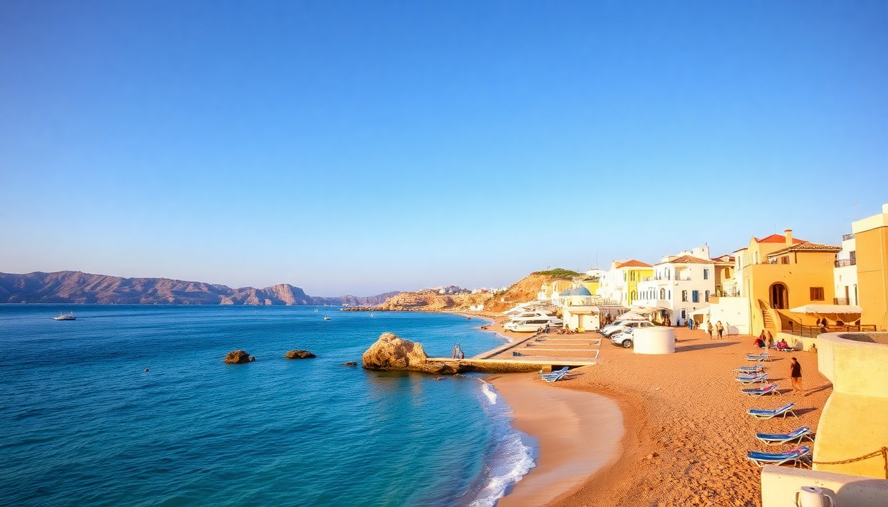

Best Beaches in Greece: A Practical Guide to the Top Islands

I spent six weeks island-hopping across Greece last summer, and the biggest surprise wasn’t the water—it was how different each island’s coastline actually is. Santorini gives you volcanic drama and red sand, Mykonos delivers party coves with daybeds, Crete has endless sandy stretches that feel like their own country, and Zakynthos drops the famous Shipwreck Beach in your lap. Here’s what I learned about which beaches are worth your time, and which ones you can skip.
Which beaches in Santorini are actually worth visiting?
Santorini is famous for its caldera views, not its swimming. Most of the island’s beaches are on the east and south coasts, away from the cliffs you see in the photos. The black sand at Perissa Beach and Kamari Beach is real—volcanic pebbles mixed with sand—and the water gets deep fast. I preferred Kamari because the Seaside by Notos taverna serves grilled octopus right on the shore, and the loungers are reasonably priced (€10 for two with an umbrella).
Red Beach near Akrotiri is visually stunning but tiny and crowded by 10 AM. The path down is loose gravel and slippery. If you go, wear water shoes. White Beach is only accessible by boat from the Red Beach dock, and it’s quieter but has no facilities—bring your own water and snacks.
For a swim without the crowds, head to Mesa Pigadia Beach, a small pebble cove south of Akrotiri. It’s where locals go. No sunbeds, no bar, just clear water and a few tamarisk trees for shade.
Is Mykonos just for party beaches, or can you find quiet spots?
Mykonos has a reputation for beach clubs and bottle service, and that’s real at Paradise Beach and Super Paradise Beach. If you want loud music and €20 cocktails, those are your spots. I spent one afternoon at Paradise and left after an hour—it’s fun for exactly one drink, then the bass gets exhausting.
The quieter side of Mykonos is the north coast. Agios Sostis Beach has no sunbeds, no bars, and no road signs. You park on the dirt shoulder and walk down. The water is turquoise and calm, and the Kiki’s Tavern (cash only, no reservations) serves grilled meat and salads on a wooden deck under a tree. Expect a 30-minute wait for a table, but it’s worth it.
Fokos Beach is another northern gem—one taverna, a handful of loungers, and a long sandy curve. I spent a full day there reading and swimming. If you’re staying in Mykonos Town, rent a scooter or ATV to reach these; taxis are expensive and unreliable.
What are the best beaches in Crete for families and long walks?
Crete is huge, so you need to pick a region. For families, Elafonisi Beach on the southwest coast is the obvious choice—pink-tinged sand, shallow warm water that stretches out for meters, and a small island you can wade to. Get there by 8:30 AM or the parking lot fills up. We stayed at Elafonisi Resort by Kalimera and walked straight onto the sand.
For long walks, Balos Lagoon is the classic. You drive down a rough 8-km dirt road (rent a car with decent clearance), then hike 20 minutes downhill. The lagoon is waist-deep and bath-warm, with white sand and turquoise water that looks Photoshopped. The walk back uphill in the heat is brutal—bring water.
Vai Beach on the east coast has a famous palm forest, the only natural one in Europe. The beach itself is nice but crowded. Skip the main strip and walk 10 minutes south to Itanos Beach, which has ancient ruins right on the sand and far fewer people.
For a hidden option, try Kedrodasos Beach near Elafonisi—a cedar forest meets a pristine cove. No services, so pack a picnic.
How do you actually get to Shipwreck Beach in Zakynthos without the chaos?
Navagio Beach (Shipwreck Beach) is the postcard image: a rusted smuggler’s shipwreck on a white sand beach, framed by towering limestone cliffs. The only way to reach the sand itself is by boat, and the experience is mixed.
The standard tour boats leave from Porto Vromi and Agios Nikolaos. They run from 9 AM to 5 PM, and the beach gets crammed by noon—hundreds of people in a small cove. I took a GetYourGuide tour that departed at 7:30 AM from Porto Vromi and had the beach almost to myself for 45 minutes. By the time we left at 9, the first wave of larger boats was arriving.
If you just want the view, drive to the Navagio Viewpoint on the north side of the cove. The road is winding and narrow, but the overlook is free and open 24 hours. Go at sunset for the best light and fewer crowds.
For a quieter beach day on Zakynthos, try Xigia Beach—a small cove with natural sulfur springs that make the water milky-blue and warm. It’s shallow and weirdly relaxing. Or Porto Limnionas, a rocky swimming spot with a taverna and diving platforms.
When is the best time to visit these beaches to avoid crowds?
June and September are the sweet spots. In June, the water is warm enough (22–24°C), the sea breeze keeps things comfortable, and the crowds haven’t peaked yet. I visited in early June and had Kamari Beach in Santorini to myself until 11 AM. By late June, the loungers fill up.
September is even better—same warm water, fewer families (kids are back in school), and lower prices on accommodation. I booked a room at Hotel Thireas in Fira for €80/night in mid-September, which would have been €200 in August.
July and August are chaos. Avoid if you can. If you must go, stick to the north coasts of Mykonos and Crete, and take the early morning boat to Navagio.
FAQ
Is it safe to swim at Red Beach in Santorini? Yes, but the path down is unstable and there’s no lifeguard. The water has strong currents near the rocks. Swim close to shore and wear water shoes—the pebbles are sharp. I saw two people slip on the path in one afternoon.
Do I need to rent a car for Crete beaches? Absolutely. Public buses run to Elafonisi and Balos, but they’re infrequent and packed. A rental car gives you access to Kedrodasos, Itanos, and the smaller coves. We rented from Auto Hertz in Chania and paid €35/day in June. Book ahead.
Are the beach clubs in Mykonos worth the money? Only if you want a scene. At Super Paradise, a pair of loungers with an umbrella costs €50–€80, and a basic cocktail is €18. The vibe is loud and Instagram-heavy. If you just want a nice beach, skip them and go to Agios Sostis or Fokos for free.
Conclusion
- Santorini’s beaches are more about scenery than swimming—Kamari and Perissa are your best bets.
- Mykonos has quiet gems on the north coast; skip Paradise and Super Paradise unless you want a party.
- Crete offers the most variety—Elafonisi for families, Balos for photos, Kedrodasos for solitude.
- Zakynthos’s Shipwreck Beach is worth the early wake-up; the viewpoint is a solid alternative.
- June and September are the months to go. Avoid July and August if you can.